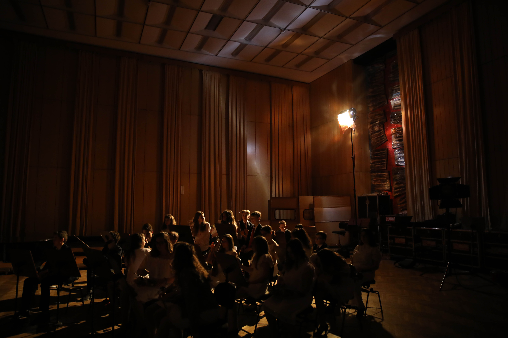
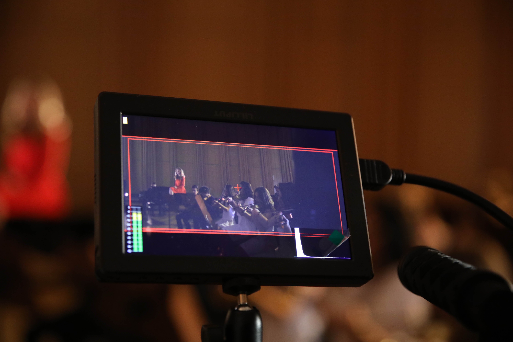
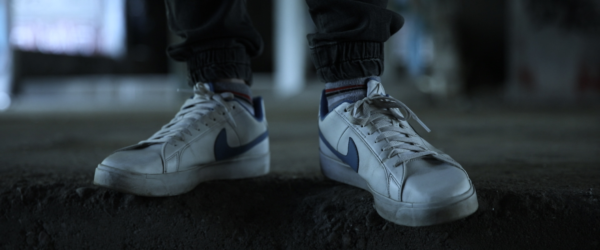
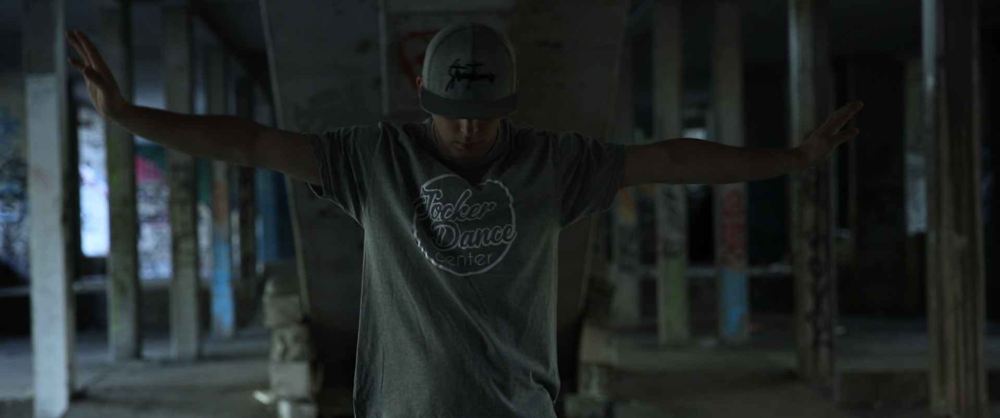
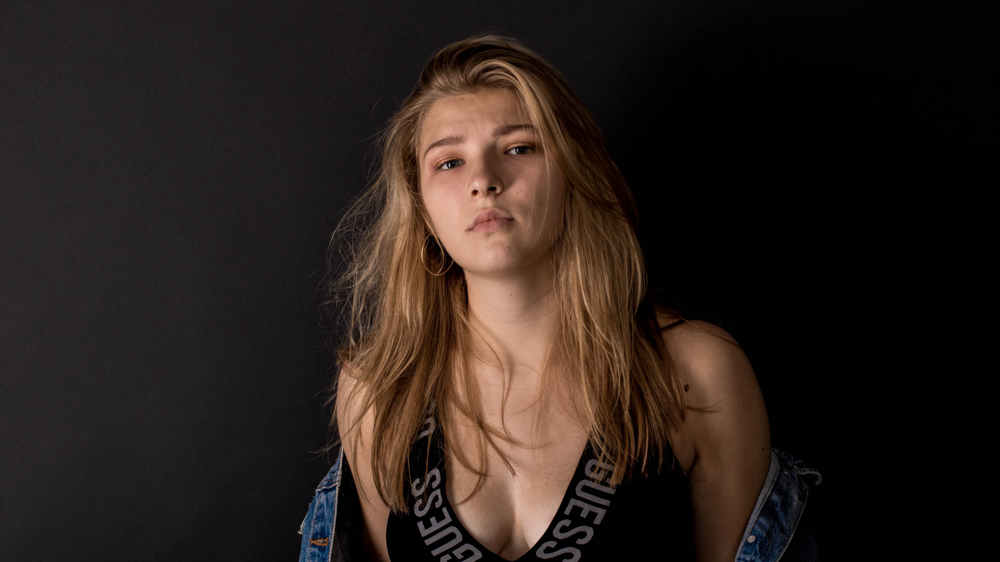
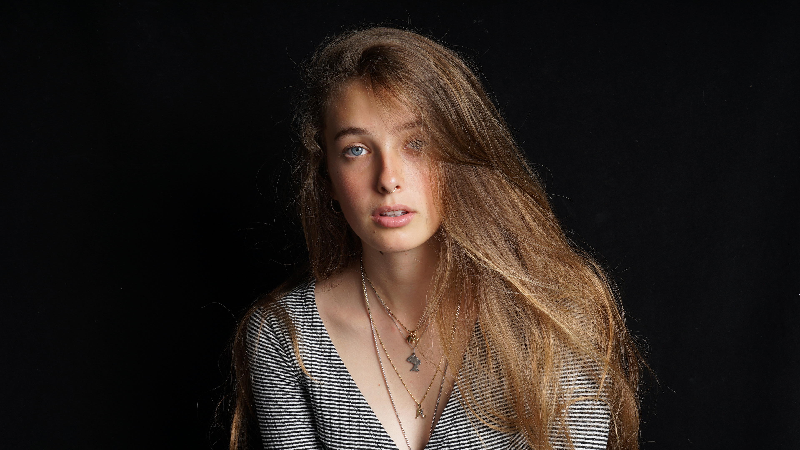
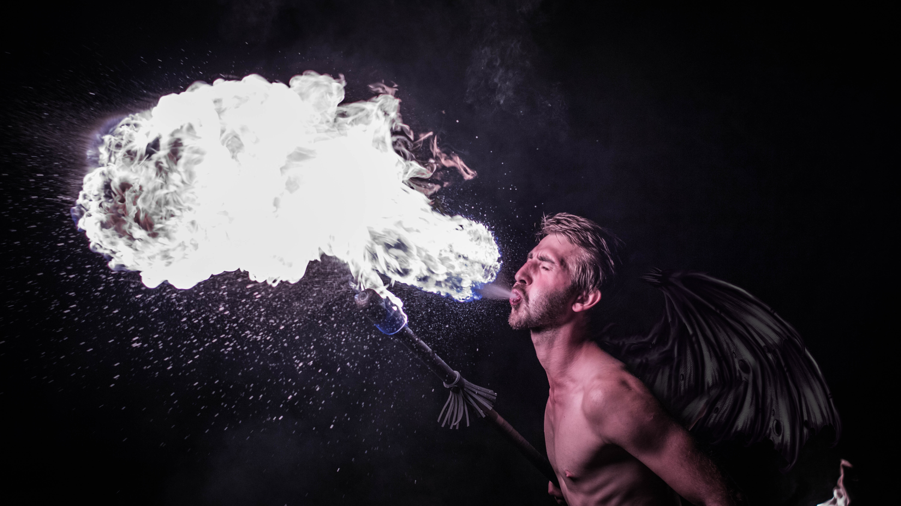
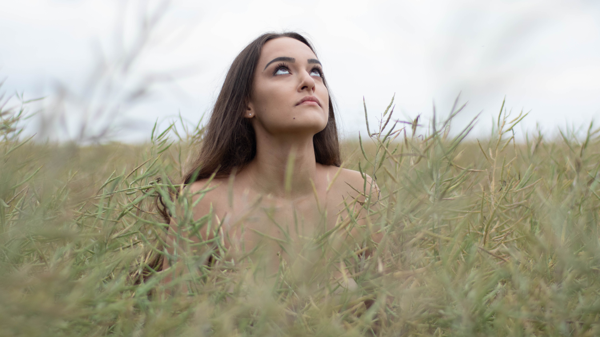
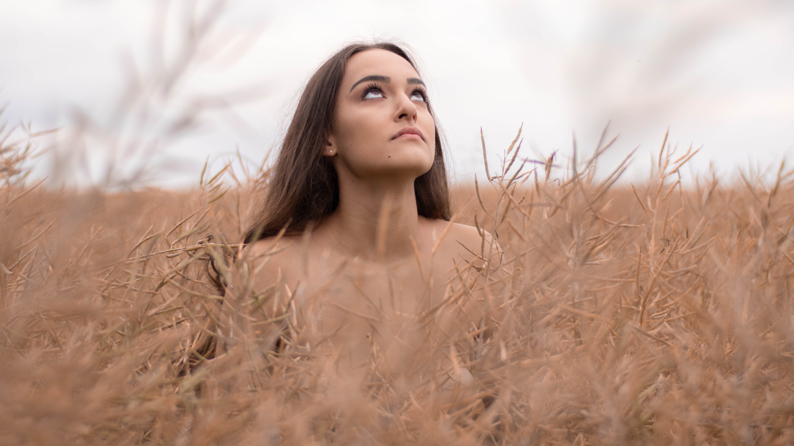
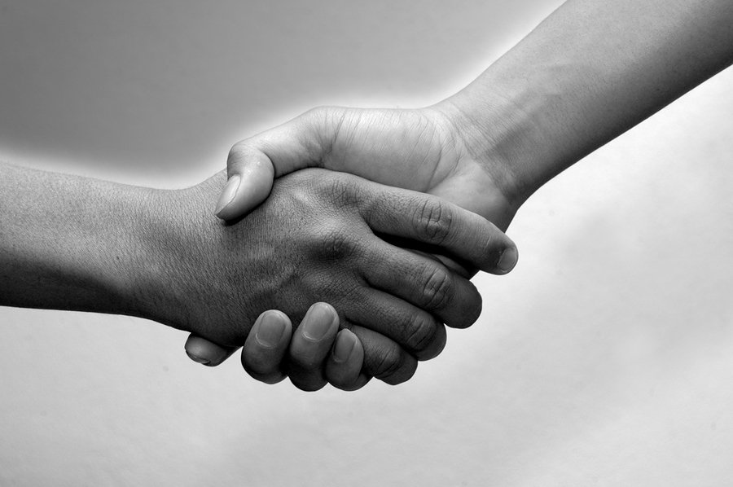

Ekipa

Maks
Montażysta
Montaż krótkich etiud filmowych licealistów w tym filmów kręconych w jeden dzień zdjęciowy.
Montaż teledysków i krótkich filmów muzycznych.
Montaż making off'ów teledysków i filmów.
Maciek
Operator kamery
Nagrywanie filmów krótkometrażowych i teledysków.
Realizacja filmików reklamowych, fotorelacja i videorelacja na eventach i obozach.
Sesje modowe i zdjęcia do portfolio aktorskich
Zainteresowanie fotografią uliczną (street photography) i sesjami plenerowymi.
"Każda moja praca ma w sobie coś swojego, ale każda zrobiona jest, najlepiej jak się dało."

Szymon
Założyciel CV CREW
Produkcent / Fotograf
Laureat 48hfp 2017 wraz z ekipą FCKP PROD.
Laureat konkursu filmowego Ministerstwa Edukacji Narodowej w 2016 roku.
Wyróżnienie w konkursie fotograficznym PORTRET 2018.
Producent oraz realizator licznych klipów wideo od 2014 roku poszukujący wyzwań związanych z branżą filmową, uczeń warszawskiego Liceum Filmowego.
Fotograf modowy działający samoistnie jak i komercyjnie.
"Fotografia modowa zaraziła mnie obsesją na punkcie światła, natomiast światło sprawiło, że moje spojrzenie na film przerodziło się w pasję do tworzenia."

Andrzej
Kierownik planu

Gustaw
CGI / Animator
Maja Charakteryzacja Uczestnictwo w drugiej edycji kampanii Anji Rubik - sexed. Jury w Docs Against Gravity. Kostiumograf w projekcie z Teatrem Rozmaitości.
Albert Mistrz oświetlenia Laureat 48hfp 2017 wraz z ekipą FCKP PROD. Gaffer / best boy w licznych etiudach studenckich.
Filip Brzeszczyński Operator kamery Realizacja teledysków na wysokim poziomie w zasięgu kilkuset tysięcy odsłon. Praca w serwisie internetowym "YouTube" jako operator kamery / montażysta z twórcami mającymi duże doświadczenie. Realizacja filmów promocyjnych typu prezentacje oraz reklamy. Relacje filmowe z masowych imprez takich jak na przykład międzynarodowy turniej e-sportowy tzw. "INTEL EXTREME MASTERS"
Karolina Reżyser obsady Reżyser obsady w filmach krótkometrażowych, m. in. “Uzdrowienie” i “Miasteczko Cud” (oba 30 min, w produkcji). Kierownik produkcji spotów, etiud i filmów krótkometrażowych, m. in 12- minutowego mastershota “Heartbeat” (2018) czy filmu “Rudy” (30 min, w produkcji)
Karol Oświetleniowiec
Kajetan Techniczny
Szymon Wiktor Praesent nec lobortis quam. Mauris vulputate aliquam felis, quis pretium purus euismod id. Morbi ut lorem tincidunt, posuere elit eget, fermentum orci. Etiam et ultrices justo. Donec laoreet vitae mauris sit amet rutrum.
Szymon Wiktor Praesent nec lobortis quam. Mauris vulputate aliquam felis, quis pretium purus euismod id. Morbi ut lorem tincidunt, posuere elit eget, fermentum orci. Etiam et ultrices justo. Donec laoreet vitae mauris sit amet rutrum.
Szymon Wiktor Praesent nec lobortis quam. Mauris vulputate aliquam felis, quis pretium purus euismod id. Morbi ut lorem tincidunt, posuere elit eget, fermentum orci. Etiam et ultrices justo.
Szymon Wiktor Praesent nec lobortis quam. Mauris vulputate aliquam felis, quis pretium purus euismod id. Morbi ut lorem tincidunt, posuere elit eget, fermentum orci. Etiam et ultrices justo. Donec laoreet vitae mauris sit amet rutrum.
Oferta
Realizacja teledysków Rozpoczynając od pierwszego spojrzenia i uściśnięcia dłoni, aż po finalizację gotowego pliku na nośniku danych. Cały ten czas jesteśmy do Państwa dyspozycji. W każdy projekt i videoclip wkładamy CAŁE swoje serce. Ze szczególną uwagą dopracowujemy najmniejsze detale. Ponadto jesteśmy otwarci na wszelkie propozycje zarówno profesjonalnych wytwórni, jak i indywidualnych kontrahentów.
 Filmy reklamowe i promocyjne Oryginalność i kreatywność spotu, pasja oraz realizacja wymagań petentów są najlepszym sposobem na spełnienie Państwa najśmielszych oczekiwań, a co za tym idzie, osiągnięcia maksymalnego poziomu satysfakcji oraz trafienia do docelowej grupy odbiorców.
 Projekty studyjne W studio fotograficzno-filmowym nasza załoga spędziła mnóstwo godzin, oddając się przy tym bardzo ciężkiej i długiej pracy. Dzięki temu jesteśmy w stanie zaoferować Państwu szeroką ofertę zdjęć oraz nagrań studyjnych, które w połączeniu z naszą postprodukcją zadowolą nawet najbardziej wymagających klientów.
 Produkcje eventowe Zapewniamy Państwu udokumentowanie multimedialne z targów, imprez firmowych czy wydarzeń okolicznościowych w najlepszej jakości! Będą one posiadały nie tylko charakter pamiątkowy, lecz będą również idealną promocją w postaci klipów wideo czy też zdjęć.


Postprodukcja zdjęć i klipów Jeśli mają Państwo zamiar usprawnić swój materiał, dostarczony naszej firmie, na etapie postprodukcyjnym, czy też wyrażają Państwo chęć na wzbogacenie gotowego materiału o elementy graficzno-wizualne, z WIELKĄ chęcią i zaangażowaniem wykonamy powierzone nam zlecenie.
  Współpraca
Quisque vel quam quis ex bibendum cursus a ut arcu. Nunc vel nisl non nisi viverra vestibulum. Sed quam nulla, volutpat id fringilla ut, molestie sed ex. Ut rhoncus mi in elementum aliquet. In auctor ipsum arcu, sollicitudin posuere justo tincidunt eu. Ut hendrerit, risus vitae vestibulum vehicula, leo odio consectetur diam, at gravida mi mi sit amet ante. Suspendisse vitae erat nec odio vehicula auctor. Nulla mi nisi, dictum ut convallis at, volutpat ut neque. Cras non ligula mi. Donec porta, tellus quis ultricies imperdiet, felis purus accumsan ex, in lobortis sapien mi eu elit. Nam nisi nisl, volutpat vitae turpis nec, ultricies efficitur lectus. In congue elementum est sed posuere.
Kontakt
tel: 923 287 382 email: blablabla@gmail.com itp...